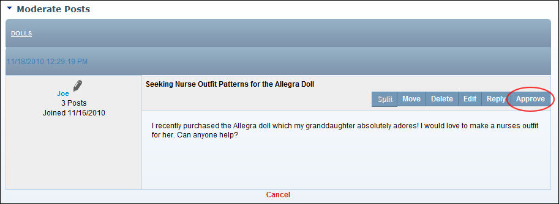

Approving a Post
How forum moderators and Administrators can approve a post to a moderated forum.
- Go to the moderator post queue. See "Navigating to the Moderator Post Queue"
- In the Forum column, click on a [Forum Name] link to view posts requiring moderation in that forum.

- Click the Approve link beside the post to be approved.

- Repeat Step 3 to approve additional posts.
- Click the Cancel button to return to the module.